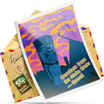

Ada semacam keajaiban yang tenang dalam perjalanan dengan Vespa—suaranya berdengung seperti melodi masa lalu, dan setiap jalan terasa menyimpan cerita yang belum terungkap. Ini bukan soal cepat sampai tujuan, tapi menikmati setiap momen di perjalanan. Melewati jalanan yang disinari matahari dan jalur berliku, perjalanan klasik ini membawa rasa bebas, gaya, dan nostalgia yang nggak pernah pudar.
Dengan setiap kilometer yang terlewati, waktu seolah melambat, bikin kamu benar-benar merasakan ritme perjalanan. Angin, pemandangan, dan kesederhanaan menikmati jalan terbuka menyatu dalam harmoni yang pas. Ini bukan sekadar perjalanan—tapi seperti kembali ke sesuatu yang abadi, di mana setiap langkah jadi kenangan yang layak disimpan.

Dengungan halus Vespa dan jalan terbuka di depan—setiap kilometer terasa seperti melangkah kembali ke masa lalu, sederhana dan tak lekang oleh waktu.
Sapuan angin, pemandangan yang lewat perlahan, dan ritme perjalanan yang tenang—semuanya terasa begitu dekat, seolah hati ikut melaju tanpa beban. Ada rasa damai, kebebasan yang halus, dan hangatnya nostalgia yang diam-diam tinggal di setiap momen.